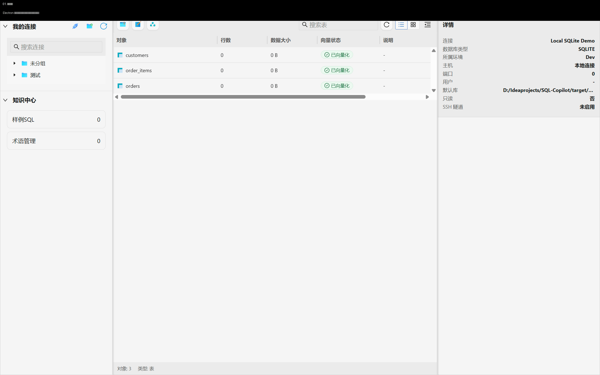
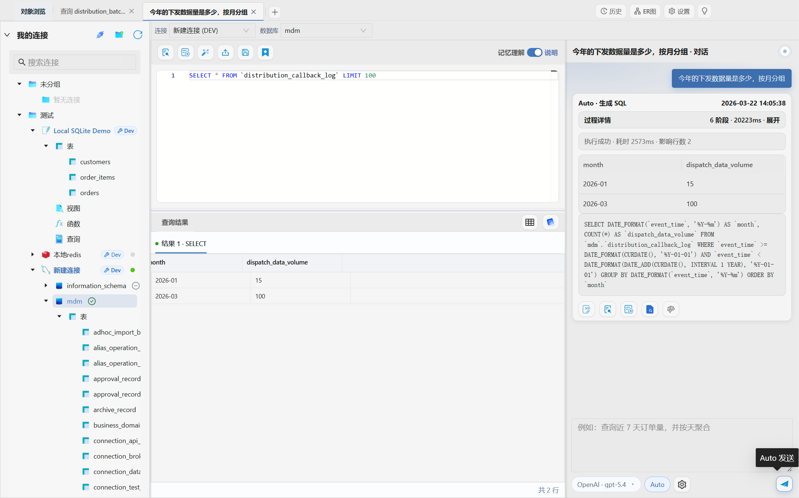
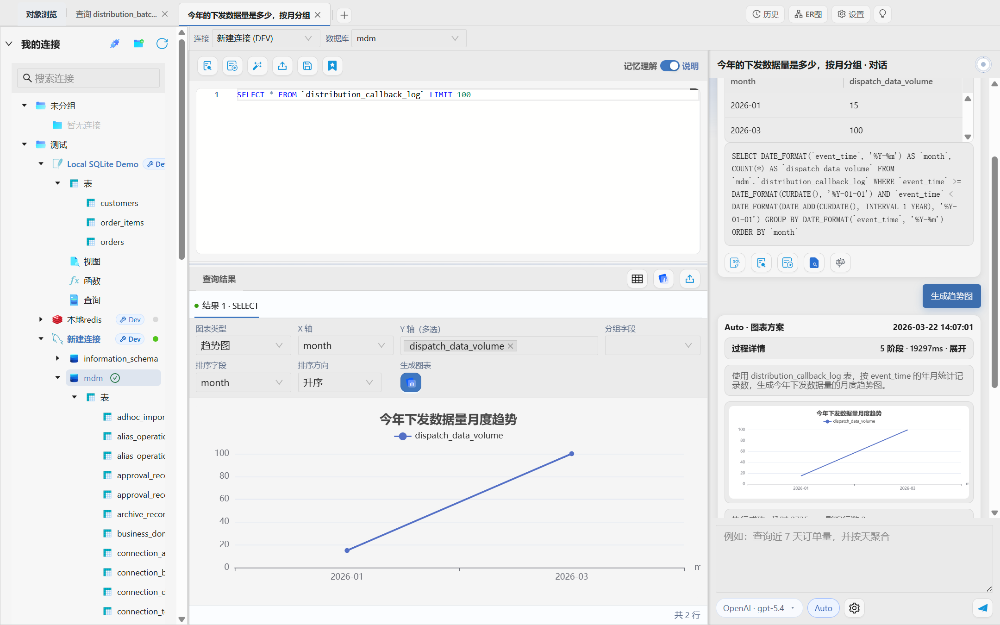
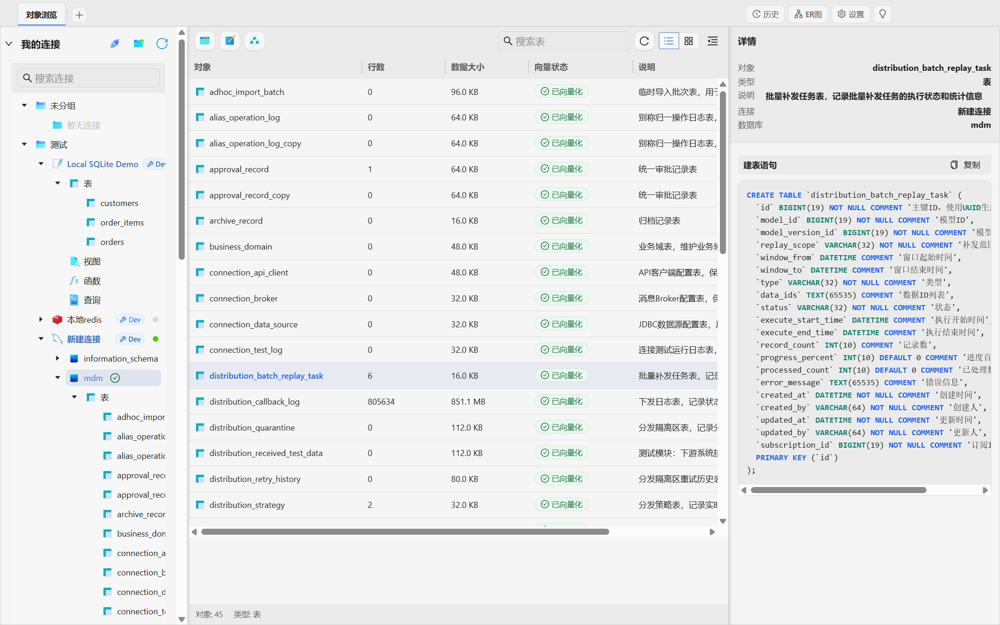
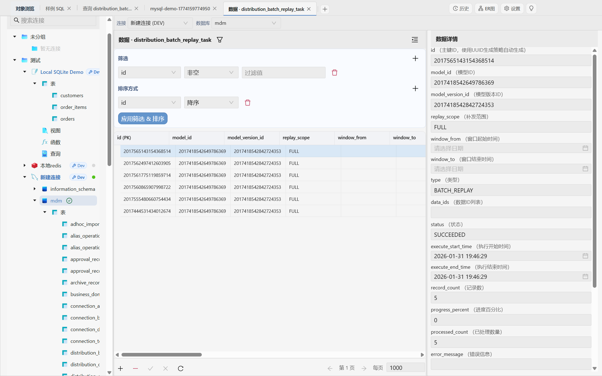
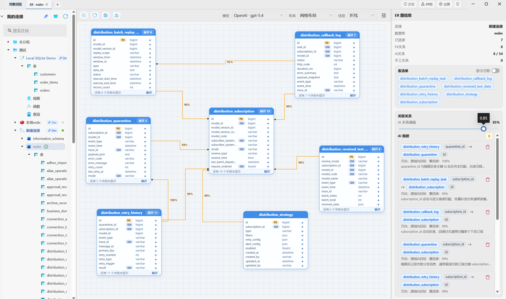
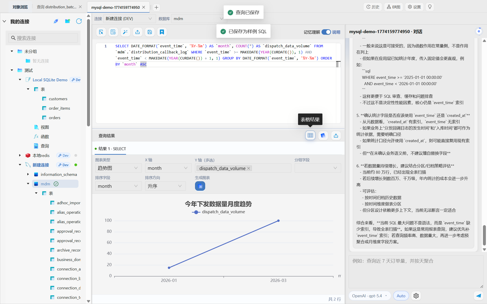

SQL Copilot 是一款面向开发、分析、测试和业务支持的桌面应用。连上数据库之后，你可以直接提需求、生成 SQL、执行查询、继续分析和修复，不必在聊天框里反复粘贴表结构和报错信息。
SQL Copilot is a desktop app for developers, analysts, testers, and support teams. Once connected to a database, you can ask in natural language, generate SQL, run queries, analyze results, and keep fixing issues without repeatedly pasting schema or error messages into a chat window.

它不是给“偶尔问一句 SQL 怎么写”的场景准备的，而是给那些每天都要和数据库打交道的人准备的。
This is not just for asking a one-off SQL question. It is built for people who work with databases every day.
更快写查询、联表排错、看懂库结构。
Write queries faster, debug joins, and understand schema structure.
自然语言生成 SQL，然后继续转图表看趋势。
Generate SQL in natural language and turn the result into charts.
核对数据、追问题、保存常用查询，减少重复劳动。
Validate data, trace issues, and save repeatable queries.
在同一个工作台里查看对象、结果、ER 图和历史。
Inspect objects, results, ER diagrams, and history in one place.
差别不在于“会不会写 SQL”，而在于它有没有真的进入你的数据库工作流程。
The difference is not whether AI can write SQL. It is whether the assistant is actually part of your database workflow.
连接数据库后，真实对象、表结构和对象详情本来就在工作台里，AI 生成 SQL 时能直接利用这些信息。
Once the database is connected, live objects, schema, and metadata are already available to the assistant.
提问、生成 SQL、执行、查看结果、分析和画图都能在同一个页面里完成，流程更连贯。
Asking, generating SQL, running queries, inspecting results, analyzing, and charting happen in one workspace.
字段不对、条件不准、方言不兼容时，可以基于真实执行反馈继续追问，不用从头再解释一遍。
If fields, filters, or dialect details are wrong, the next fix can build on real execution feedback instead of starting over.
把当前库的真实结构带进工作台里，后续回答更贴近实际。
Bring real metadata into the workspace so the next answers are grounded in reality.
不一定非要先写 SQL，可以先说你想查什么、怎么看、想得到什么结果。
You do not have to start with SQL. Just say what you want to query or analyze.
拿到 SQL 之后直接运行，看结果、看图表、看解释，有问题就接着修。
Run the SQL, inspect results, generate charts, read explanations, and keep refining when needed.
这些都是真实界面截图，不是概念图。每一张图都对应一种常见的数据库工作场景。
These are real product screens rather than concept mockups. Each one represents a common database task.

问题、SQL 和结果在同一个工作台里联动，适合边问边验证。
Prompt, SQL, and results live side by side so you can verify while you work.

适合做趋势分析、临时报表和快速汇报，不用再切去别的工具。
Useful for trend analysis, quick reports, and ad hoc summaries without another tool.

表大小、行数、说明和建表语句都可以直接看，理解上下文更快。
Table size, row count, notes, and DDL are available immediately for faster understanding.

查问题的时候，通常不是只看一条 SQL，还要顺手核对真实记录。
Troubleshooting usually means checking real records, not just looking at a query.

ER 图适合帮助自己理解，也适合拿来和同事沟通结构。
ER diagrams help both personal understanding and team communication.

临时查出来的结果不必只用一次，可以沉淀成样例和知识。
One-off work can become reusable examples and team knowledge.
连接信息、历史记录和配置保留在本地，更适合对数据库安全和隐私有要求的团队。
Connection details, history, and settings stay local, which matters for privacy-sensitive database work.
支持 Windows、macOS 和 Linux，适合开发和分析场景长期使用。
Available on Windows, macOS, and Linux for everyday development and analysis workflows.
仓库采用 MIT License，协议文本见根目录 `LICENSE` 文件。
The repository is released under the MIT License. See the root `LICENSE` file for details.